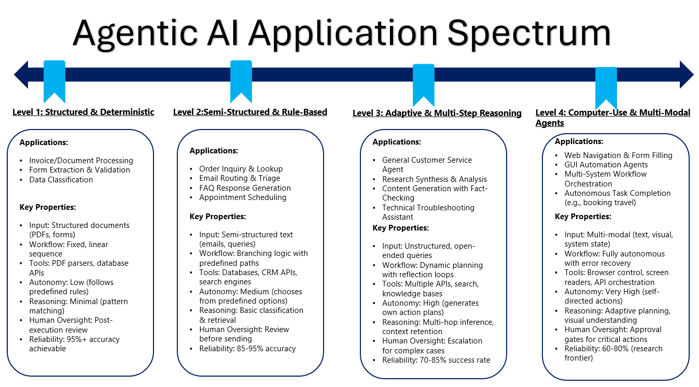

Module 1 — Episode 4
Training:Agentic AI Training
🎯 Learning Objectives
By the end of this episode, you will be able to:
- ✅ Identify common real-world applications of Agentic AI workflows
- ✅ Understand how structured and unstructured tasks differ in implementation difficulty
- ✅ Evaluate when an agentic approach is appropriate for automating business processes
🧭 Overview
This episode explores practical examples of Agentic AI workflows across different levels of complexity — from structured invoice extraction to open-ended customer service automation.
You’ll see how well-defined, step-by-step tasks are easier to automate with agents, while tasks requiring dynamic reasoning or multi-modal input introduce significant challenges.
These examples illustrate how agentic workflows are already transforming business operations and where the boundaries of current capabilities lie.
🧱 Prerequisites
Readers should already understand:
- The basic concept of Agentic AI and workflow orchestration
- How LLMs interact with external tools or APIs
- Concepts introduced in [Module 1, Episode 3: Agentic Workflow Architecture]
🔑 Core Concepts
- Agentic Workflow – A process where an AI agent autonomously executes a sequence of predefined or dynamically planned actions to complete a task.
- Structured vs. Unstructured Tasks – Structured tasks follow a predictable sequence (e.g., invoice parsing), while unstructured tasks require adaptive planning (e.g., general customer service).
- Tool Use – The ability of an agent to call APIs, databases, or even use a web browser to complete a task.
- Computer Use Agents – Advanced agents capable of interacting with GUIs or web pages to perform multi-step actions similar to a human user.
🖼 Visual Explanation
 Caption:This diagram shows the progression of agentic AI applications from structured workflows to highly autonomous agents, with each level illustrating autonomy, reasoning capability, reliability expectations, and required tools.
⚙️ Technical Breakdown
How It Works
Agentic AI applications typically follow a perception → reasoning → action loop:
1. Input Processing – Convert raw inputs (e.g., PDFs, emails) into structured text for LLM consumption.
2. Classification and Validation – Determine the type of document or request (invoice, inquiry, etc.).
3. Information Extraction – Identify relevant fields or entities (e.g., biller, due date, order ID).
4. Tool Invocation – Call APIs, databases, or other systems to fetch or update data.
5. Response Generation – Draft or execute actions based on retrieved data.
6. Human Review (Optional) – Queue results for human approval before execution.
Why It Works
Agentic workflows succeed because they:
- Decompose complex business tasks into deterministic, repeatable steps
- Leverage LLMs for semantic understanding and decision-making
- Integrate with external systems for data retrieval and action execution
- Maintain a closed feedback loop, allowing for iterative refinement and error handling
When To Use It
✅ Ideal Scenarios:- Tasks with clear, repeatable procedures (e.g., form extraction, order lookup)
- Workflows that involve structured text inputs
- Systems where human review can verify AI outputs
- Tasks requiring open-ended reasoning without defined steps
- Workflows involving multi-modal inputs (images, audio, video) unless models are specifically trained for them
- Real-time, mission-critical operations where reliability must be 100%
Trade-offs & Limitations
| Aspect | Challenge |
|---|---|
| Complexity | Dynamic task planning increases unpredictability |
| Performance | Multi-step reasoning can be computationally expensive |
| Reliability | Web-based actions depend on page load timing and DOM stability |
| Maintainability | Each integrated API or tool adds potential points of failure |
Performance Considerations
- Latency: Each API/tool invocation adds round-trip time.
- Error Handling: Agents must detect and recover from failed steps (e.g., missing data, API timeouts).
- Scalability: Stateless designs scale better but may require external memory for continuity.
- Resource Usage: Browser-based agents consume significant compute and memory.
💻 Code Examples
Minimal Example — Invoice Extraction Workflow
from agentic_ai import Agent, Tool
# Define tools
pdf_to_text = Tool("pdf_to_text_api")
update_db = Tool("update_invoice_db")
# Define agent workflow
agent = Agent(name="InvoiceProcessor")
@agent.workflow
def process_invoice(pdf_file):
text = pdf_to_text(pdf_file)
if "invoice" not in text.lower():
return "Not an invoice."
fields = agent.llm.extract_fields(text, ["biller", "address", "amount_due", "due_date"])
update_db(fields)
return "Invoice recorded successfully."
# Run
process_invoice("invoice_august_2025.pdf")
Example — Customer Inquiry Agent
@agent.workflow
def handle_customer_email(email):
details = agent.llm.extract_order_details(email)
if not details:
return "Non-order inquiry."
order_info = agent.call("orders_db", "lookup", details["order_id"])
draft = agent.llm.compose_reply(order_info)
agent.call("review_queue", "submit", draft)
return "Reply queued for review."
🧩 Real-World Examples
| Application | Description | Difficulty |
|---|---|---|
| Invoice Processing | Extract fields and record in DB | 🟢 Easy |
| Order Inquiry Agent | Retrieve order info and draft replies | 🟡 Medium |
| General Customer Service Agent | Handle arbitrary queries with planning | 🔴 Hard |
| Computer Use Agent | Navigate web pages and execute actions | 🔴 Very Hard |
🧠 Key Takeaways
- Agentic AI excels when task structure is explicit and deterministic.
- Tool integration (e.g., databases, APIs) is a cornerstone of effective workflows.
- Planning and adaptive reasoning remain open research challenges.
- Computer-use agents represent the frontier of agentic AI research, bridging LLM reasoning and real-world digital interaction.